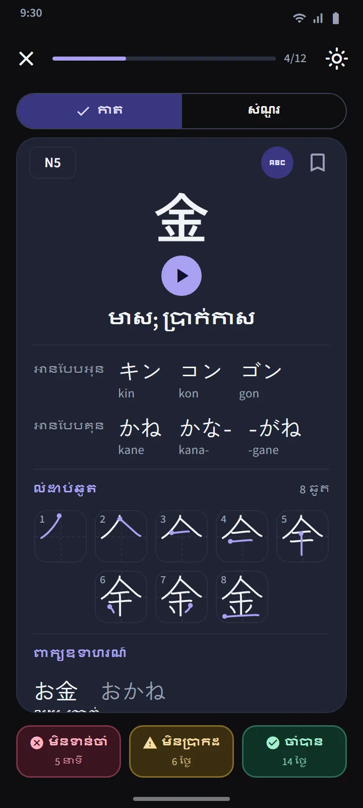

ឈុតកានជី 25 តួ តាមលំដាប់សាលារៀនជប៉ុន
ផ្ទាំង «កានជី» ចែកតាមកម្រិត JLPT រួចចែកជាឈុតដែលមានកានជីប្រហែល 25 តួ។ ក្នុងកម្រិតមួយ លំដាប់ធ្វើតាមកម្មវិធីសិក្សារបស់សាលារៀនជប៉ុន (ថ្នាក់ទី 1 មុនគេ) បន្ទាប់មកតាមចំនួនឆូតពីតិចទៅច្រើន ហើយស៊េរីដែលគួររៀនជាមួយគ្នា ដូចជាលេខ ឈ្មោះថ្ងៃក្នុងសប្ដាហ៍ និងរដូវ ត្រូវបានរក្សាឱ្យនៅតាមលំដាប់។ ជួរឈុតនីមួយៗបង្ហាញតួកានជីរបស់វា របារវឌ្ឍនភាព ចំនួនដែលចាំបានហើយ និងស្ទាត់ជំនាញ និងស្លាក «សំណួររួចរាល់» ឬចំនួនដែលដល់កំណត់។
| កម្រិត | កានជី | ការចូលប្រើ |
|---|---|---|
| N5 | 103 | ឥតគិតថ្លៃ |
| N4 | 181 | ឥតគិតថ្លៃ |
| N3 | 370 | Premium |
| N2 | 369 | Premium |
| N1 | 1,207 | Premium |


កាត និងសំណួរកានជី
ផ្នែកខាងមុខនៃកាតមានតែកានជីមួយតួប៉ុណ្ណោះ។ ផ្នែកខាងក្រោយ៖ អត្ថន័យ ការអានបែបអុន និងគុន (ជាមួយរ៉ូម៉ាជី បើអ្នកចង់បាន) ដ្យាក្រាមលំដាប់ឆូត ដែលមានមួយប្រអប់សម្រាប់មួយឆូត ហើយមានសញ្ញាចំណុចចាប់ផ្ដើម និងពាក្យឧទាហរណ៍ដែលប្រើកានជីនោះ។ ប៊ូតុងបីដូចគ្នានឹងកាតវាក្យសព្ទ កំណត់ពេលវាឡើងវិញ។
សំណួររបស់ឈុតមួយបើក ពេលមានកានជី 10 តួស្ថិតក្នុង «ចាំបានហើយ» ឬ «ស្ទាត់ជំនាញ» ដោយមានសំណួរបីប្រភេទ៖ ពីកានជីទៅអត្ថន័យ ពីអត្ថន័យទៅកានជី និងពីកានជីទៅការអាន។ ច្បាប់សម្រាប់ «ស្ទាត់ជំនាញ» គឺដូចគ្នា៖ ឆ្លើយត្រូវក្នុងសំណួរ នៅបីថ្ងៃផ្សេងគ្នា។ រំលឹកកានជី នៅខាងលើផ្ទាំង ប្រមូលកានជីទាំងអស់ដែលដល់កំណត់ពីគ្រប់ឈុត ហើយសំណួរចម្រុះសាកល្បងឆ្លងឈុត។


ព័ត៌មានលម្អិតកានជី និងកញ្ចប់ពិសេស
ទំព័រលម្អិតរបស់កានជីនីមួយៗមានអត្ថន័យ ដំណាក់កាល និងការរំលឹកបន្ទាប់ ការអាន ដ្យាក្រាមឆូត និងពាក្យឧទាហរណ៍ ហើយទំព័រលម្អិតរបស់ពាក្យ ភ្ជាប់ទៅកានជីដែលផ្សំវា។ ដូចវាក្យសព្ទដែរ កានជីមានកញ្ចប់ បានចំណាំ កានជីពិបាក និង ប្រកួតរហ័ស 60 វិនាទី ហើយកុងតាក់មួយក្នុងផ្នែក «ការអនុវត្តរហ័ស» នៃទំព័រដើម ប្ដូរក្រឡាទាំងបួនរបស់វាទៅជាកំណែកានជី។


សរសេរកានជីដោយម្រាមដៃ
កានជីដែលអ្នកចាំបានហើយ ឬស្ទាត់ជំនាញ អាចហាត់ដោយការសរសេរបាន៖ មានតែអត្ថន័យ និងការអានប៉ុណ្ណោះដែលបង្ហាញ អ្នកសរសេរមួយឆូតម្ដងៗ ហើយឆូតនីមួយៗត្រូវបានពិនិត្យទាំងរូបរាង ទិសដៅ និងលំដាប់ ដោយមិនត្រូវការអ៊ីនធឺណិត។ មានបីរបៀប៖ ពីការចងចាំ មានស្រមោល និង ចុចតាមលំដាប់។ កានជីមួយរាប់ថា «សរសេរបាន» បន្ទាប់ពីអ្នកសរសេរវាពីការចងចាំដោយគ្មានជំនួយ នៅពីរថ្ងៃផ្សេងគ្នា។


ស្គាល់កានជី
មេរៀនខ្លីៗ 11 អំពីរបៀបដែលកានជីដំណើរការ មុននឹងចាប់ផ្ដើមទន្ទេញ៖ ការអានអុង និងគុង និងពេលណាប្រើមួយណា អូគុរិហ្គាណា សំឡេងដែលប្រែប្រួលដូចជា っ និងរ៉េនដាគុ ការអានដែលទន្ទេញជាពាក្យទាំងមូល រ៉ាឌីកាល់ និងលំដាប់គូស។ បើកពីផ្នែក «មូលដ្ឋានភាសាជប៉ុន» នៃទំព័រដើម ហើយឥតគិតថ្លៃ។
ប្រភពទិន្នន័យ
អត្ថន័យ និងការអានមកពី KANJIDIC (Electronic Dictionary Research and Development Group) ហើយលំដាប់ឆូតមកពី KanjiVG ដែលទាំងពីរស្ថិតក្រោមអាជ្ញាប័ណ្ណ CC BY-SA។ កម្រិតរបស់កានជីគឺជាការប៉ាន់ស្មានដោយផ្អែកលើបញ្ជី JLPT ចាស់ៗ។ JLPT បច្ចុប្បន្នមិនចេញផ្សាយបញ្ជីកានជីផ្លូវការទេ។